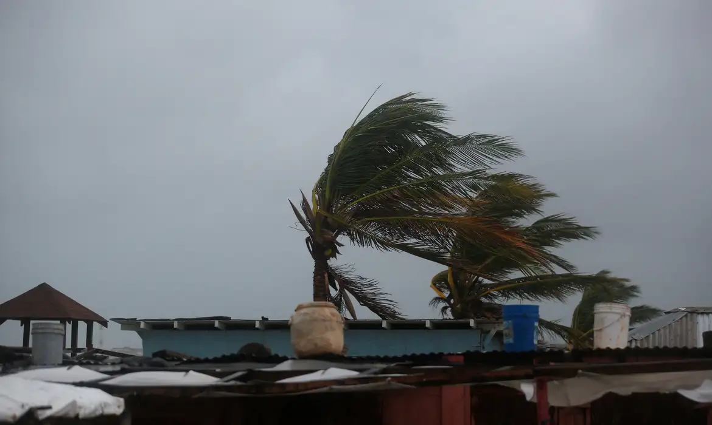

Após devastar a Jamaica, furacão Melissa perde força e chega a Cuba
Já enfraquecido, o furacão atingiu a província de Santiago de Cuba com ventos máximos de 195 km/h

Após devastar a Jamaica como um dos furacões mais fortes já registrados no Atlântico, o furacão Melissa atingiu Cuba na madrugada desta quarta-feira (29/10), segundo o Centro Nacional de Furacões dos Estados Unidos (NHC, sigla em inglês). No entanto, ele perdeu força e atingiu a ilha, na província de Santiago de Cuba, como tempestade de categoria 3.
Conforme o órgão, os ventos máximos sustentados foram de aproximadamente 195 km/h. Milhares de pessoas foram evacuadas para abrigos. Um alerta de furacão estava em vigor para as províncias de Granma, Santiago de Cuba, Guantánamo, Holguín e Las Tunas.
Avisos metereológicos
Na manhã dessa terça-feria (28/10), o Melissa apresentava ventos máximos sustentados de 193 km/h e deslocava-se para nordeste a 16 km/h, de acordo com o Centro Nacional de Furacões em Miami. O centro do furacão estava localizado a 32 quilômetros a leste de Chivirico e a cerca de 97 quilômetros em Guantánamo, Cuba.
As previsões indicavam que Melissa cruzaria a ilha durante a manhã desta quarta e avançaria em direção às Bahamas ainda hoje. A chuva intensa contínua pode causar enchentes catastróficas e deslizamentos de terra, alertaram meteorologistas norte-americanos. Um alerta de furacão também estava em vigor para Bermudas.
Destruição na Jamaica
Ainda com categoria 5, o furacão Melissa tocou o solo na Jamaica nessa terça como a “tempestade do século” e a pior da história do país. Com ventos de 295 km/h, chamados de “catastróficos” por meteorologistas, e pressão interna de 892 mb – a terceira maior já registrada – o Melissa chegou ao país pelo noroeste do território.
“Melissa atinge o sudoeste da Jamaica, perto de New Hope, como um poderoso furacão de categoria 5”, confirmou o NHC.
Em seus últimos posts nas redes sociais, antes de confirmar a chegada do furacão, o NHC fez fortes alertas para que a população buscasse abrigo: “Ventos catastróficos, inundações repentinas e marés de tempestade estão ocorrendo na ilha. Esta é uma situação extremamente perigosa e com risco de vida! Proteja-se agora”.
Três pessoas morreram no país por conta de tempestades prévias à chegada do furacão. Segundo a Cruz Vermelha, a passagem do Melissa na Jamaica tem um “impacto massivo” e afeta ao menos 1,5 milhão de pessoas —metade da população da ilha.
Este é o furacão mais forte a atingir a ilha em sua história desde o início dos registros, há 174 anos.
“Extremamente perigoso”
O furacão Melissa é caracterizado como “extremamente perigoso” e vai gerar consequências que ameaçam a vida, como inundações repentinas e um aumento do nível do mar de até quatro metros em algumas partes da ilha, segundo o NHC.
O governo jamaicano preparou o país para receber o furacão Melissa, emitiu ordens de evacuação obrigatória para diversas regiões do país, incluindo a capital Kingston, e alertou para danos catastróficos na ilha. Cerca de 900 abrigos foram disponibilizados à população. Cuba também já começou a evacuar parte de sua população.
“Não existe infraestrutura na região capaz de suportar um furacão de categoria 5. A questão agora é a velocidade de recuperação. Esse é o desafio”, disse o primeiro-ministro jamaicano, Andrew Holness.
A Organização Meteorológica Mundial (OMM) afirmou que esta será a “tempestade do século” na Jamaica e estima que o Melissa pode trazer rajadas de vento que ultrapassam os 300 km/h, com inundações repentinas e deslizamentos de terra.
“Uma situação catastrófica é esperada. Para a Jamaica, será com certeza a tempestade do século”, disse Anne-Claire Fontan, especialista em ciclones tropicais da OMM, em coletiva de imprensa em Genebra.